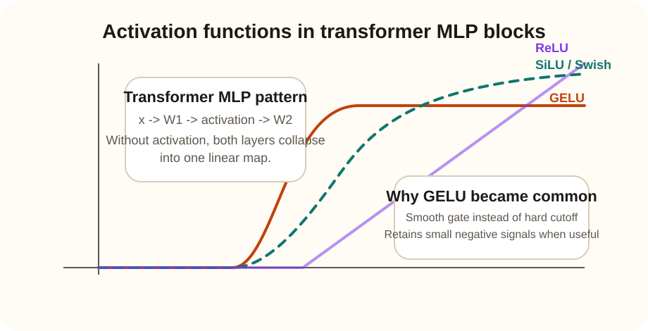

Core dependency
Why activation functions matter in transformers
Short answer: attention mixes information across tokens, but activation functions inside the MLP block create nonlinear transformations. Without them, the network loses much of its expressive power.
Linear layers alone are limited
Two linear layers in a row can be rewritten as one linear layer. That means you do not gain meaningful extra representational power unless a nonlinear activation sits between them.
Activations make feature selection possible
The activation decides which intermediate features are amplified, softened, or suppressed for each token representation.

| Activation | Behavior | Why it matters |
|---|---|---|
| ReLU | Hard zero for negative values. | Simple and cheap, but can be less smooth and can discard too much signal. |
| GELU | Smoothly gates activations according to magnitude. | Common in transformers because it keeps optimization smooth and expressive. |
| SiLU / Swish | Multiplies input by a sigmoid gate. | Also smooth and effective, especially in some modern large models. |
Example: ambiguous phrase interpretation
Suppose attention has already gathered evidence that the word "bank" might refer to a river bank or a financial bank. The MLP with a good activation function can transform the mixed evidence into higher-level features that separate these two meanings depending on surrounding context such as "river", "loan", or "deposit".
Why this matters at GPT scale
At large parameter counts, small architectural choices compound. The activation affects optimization smoothness, gradient flow, sparsity patterns, and how easily the model learns subtle semantic distinctions in its MLP channels.
Design logic
Why do transformers prefer GELU-like nonlinearities?
Why this design works well
- Smooth activations keep gradients less abrupt than hard thresholding.
- They preserve more nuanced small-magnitude signals when those signals are still informative.
- That matters in deep transformer MLPs where subtle feature interactions accumulate over many layers.
What weaker choices fail at
- No activation at all collapses the MLP into a linear transform.
- Hard-threshold activations can discard useful negative or weak features too aggressively.
- Bad activation choices can make optimization noisier and reduce expressiveness.
Interview readiness
Questionnaire and scenarios
Why is the feed-forward sublayer not just a small detail?
Because attention mostly decides what information to gather, while the MLP decides how to transform that gathered information into richer features. A large amount of transformer capacity lives in these nonlinear token-wise projections.
Why would GELU often outperform plain ReLU in transformers?
Because GELU applies a smoother gating behavior instead of a hard cutoff. That tends to preserve optimization stability and nuanced feature information in deep networks.
You replace GELU with a linear identity and model quality drops. How do you explain that?
The MLP lost its nonlinearity, so it can no longer synthesize complex token features. The block became closer to one large linear projection, reducing expressive power.
An interviewer asks why attention alone cannot separate all ambiguous meanings. What should you say?
Attention can gather contextual evidence, but nonlinear transformations are needed to reshape that evidence into decision-useful internal features. Ambiguity resolution often depends on this second stage.